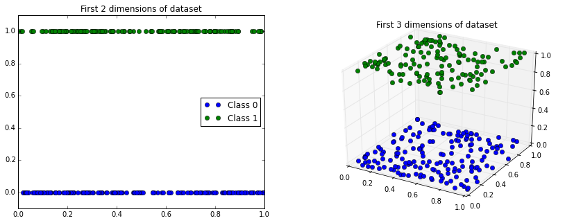

Algorithms sensitivity to single salient dimension
Posted on Fri 23 January 2015 in Notes
I was doing a voice activity detection algorithm and testing my implementation on speech data recorded in a silent room. My first feature was a simple energy level detector, basically giving a number to how high volume each frame of sound contains. Since there was no noise on the recordings, the mere presence of volume explained 93% of the results.
I decided to ad frequencies to the feature vector. Given that each frame is 80 miliseconds, this makes it possible to calculate the energy of some 40 distinct frequencies. I'd expect the few coughs and breathings that were mistaken as speech to have a different frequency profile and be cut out using this larger dataset. To my surprise, my nearest neighbour classifier improved with a few percentage points, while my SVM plummeted with over 20 points accuracy.
I realize that the saliency of these ~40 new points are very low, compared to energy-datapoint, but I honestly still expected the SVM to figure this out. And i expected the NN to be much weaker against such an increase in dimensions.
Puzzled, I decided to conduct an experiment looking at how different classifiers handle additional low-saliency dimensions. In this setup only one dimension is salient, but it will how ever completely explain the data. Meanwhile all other dimensions are completely random noise.

You can download the ipython notebook or read it online. (warning, the code is very stateful and uses global variables, so be sure to execute things in order)